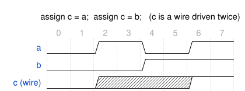

4 SystemVerilog Basics
SystemVerilog basics
4.1 Goal for this week
- Explain what a hardware description language is, and why we describe digital systems in text instead of drawing every gate
- Place SystemVerilog in the Verilog family, and know which subset of it this course uses
- Read and write a module: ports, directions, internal signals
- Tell nets from variables, and know the four values a signal can hold
- Write numeric constants with an explicit size and base
- Describe combinational logic with
assignand the SystemVerilog operators, and avoid the classic mistakes:&vs.&&, and two drivers on one net
4.2 Why describe hardware in text
The previous chapters described digital circuits bottom-up: transistors, gates, and the standard and programmable devices built from them, up to the FPGA. Nobody designs a processor by placing those pieces one at a time. A modern SoC has millions of gates, and a schematic of that size is neither writable nor reviewable. Instead we describe the system in text, in a hardware description language (HDL), and let tools do the placing.
The key idea is abstraction: an HDL lets us specify how a system operates without getting consumed prematurely by how it is implemented. The same description can be used in two very different ways. A simulator runs it as a model, so we can check behavior long before any chip exists. A synthesizer turns it into a netlist of real gates, or into the LUTs and flip-flops of the FPGA from the previous chapter. The rest of this course is about writing descriptions that are good for both.
4.3 What an HDL is used for
A single HDL covers a wide range of jobs. At the top, we can write a high-level behavioral model that says what a block computes, with no hardware structure at all. One level down is register-transfer level (RTL): the design is a set of registers, and the combinational logic that moves data between them on each clock edge. This is the level at which this course, and almost all digital design, is done. Below it, the output of synthesis is a gate-level netlist, which can itself be written in the same language, and which can be annotated with timing information for timing simulation. Finally, the same language is used to write testbenches that verify the design.
Not everything an HDL can express can be turned into hardware. A simulator will happily run a testbench that waits 10 ns and prints a message, but a synthesizer has no gate for “wait 10 ns”. Only a subset of the language is synthesizable, and writing in that subset is the first skill of this course.
4.4 From Verilog to SystemVerilog
Verilog was introduced in 1984 with a dual purpose: to model digital systems, and to describe the testbenches that check those models. As we saw, synthesis supports only a subset of what the language can express. Verilog was standardized several times, and the last Verilog standard is the one that SystemVerilog builds on:
| Standard | Year | Nickname |
|---|---|---|
| IEEE 1364-1995 | 1995 | Verilog-1995 |
| IEEE 1364-2001 | 2001 | Verilog-2001 |
| IEEE 1364.1-2002 | 2002 | Verilog RTL Synthesis (patch for the synthesizable subset) |
| IEEE 1364-2005 | 2005 | Verilog-2005, the last Verilog standard |
| IEEE 1800-2005 | 2005 | SystemVerilog-2005, extensions of Verilog-2005 |
| IEEE 1800-2009, -2012, -2017, -2023 | SystemVerilog, each extending the previous one |
Too many new features had accumulated to keep calling the result Verilog, so a new language was defined. SystemVerilog extends Verilog in two directions: it improves hardware modeling (for example logic, always_comb, always_ff, enumerations and packed structures, all of which we use), and it adds verification features such as assertions, object-oriented programming, and constrained random stimulus.
Each SystemVerilog standard is an extension of the previous one, so backward compatibility is preserved. A synthesizer for SystemVerilog-2005 understands plain Verilog, but a tool that only supports Verilog-2001 will report an error on the first SystemVerilog construct it meets.
We will cover only a small, synthesizable part of the language. There are two reasons. The language is far too large for one course. And once you can prototype with the basic constructs, new ones are easy to pick up when you need them.
4.5 Anatomy of a module
Every piece of hardware in SystemVerilog lives inside a module. The keywords module and endmodule mark the beginning and the end of the description, and a module can instantiate other modules inside it, which is how hierarchical designs are built.
module and_or (
input logic a, b, c,
output logic y
);
logic t; // internal signal
assign t = a & b;
assign y = t | c;
endmoduleThe module name is followed by a port list in parentheses. Each port has a direction, a type, and a name. Several ports of the same direction and type can share one declaration, as a, b, c do above. After the semicolon comes the module body: declarations of internal signals such as t, and the statements that describe behavior, here two continuous assignments. Figure 4.1 shows what a synthesis tool builds from this module.
| Direction | Meaning |
|---|---|
input |
Data flows into the module through this port |
output |
Data flows out of the module through this port |
inout |
Bidirectional: data can flow both ways (used for tri-state pins) |
and_or module, drawn by Yosys directly from the source above.
4.6 Values: 0, 1, X and Z
A wire in a real circuit is at a high or a low voltage, so you might expect two values, 0 and 1. SystemVerilog uses four, because the simulator also has to represent situations that a real circuit can get into:
| Value | Meaning |
|---|---|
0 |
logic low, false |
1 |
logic high, true |
X |
unknown: an uninitialized register, or a net that two sources drive to different values |
Z |
high impedance: nothing is driving the signal (an unconnected input, or a tri-state buffer that is turned off) |
You will meet X in simulation when something is wrong, and it is one of the most useful debugging signals you have: it spreads through logic that depends on it, so an X on an output points back to an uninitialized or double-driven source. Z appears with tri-state buffers, like the I/O block of the FPGA chapter. A synthesizer never creates an X or a Z; they exist only in the simulation model.
4.7 Data types: nets and variables
SystemVerilog has two kinds of signals, and the difference between them is what the whole language is built around.
A net, declared with wire or logic, models a physical connection between things. It stores nothing: its value at any moment is whatever its drivers are producing right now. If several things drive it, the net resolves their values, which is how a tri-state bus works. A variable is a signal that remembers. It holds the last value assigned to it, and keeps it until the next assignment.
Net (wire,logic) |
Variable (logic, int, …) |
|
|---|---|---|
| Models | a connection | a stored value |
| Holds a value | no, resolved from its drivers | yes, the last one assigned |
| Driven by | assign, module outputs |
assign (once), or procedural blocks |
| Multiple drivers | allowed, resolved | an error |
In plain Verilog you had to choose between wire and reg depending on how you assigned the signal, and reg was widely mistaken for “a register” when it is nothing of the kind. SystemVerilog fixes this with logic: a four-state data type that can be driven by a continuous assignment, by a procedural block, or by a module output. Its one rule is that it may have only one driver, and the tools check it. For a signal that legitimately has several drivers, such as a tri-state bus, use wire.
bit is the two-state counterpart of logic: it can only hold 0 and 1, so it can hide an unknown value in simulation by silently turning it into a 0. For that reason this course uses logic for signals.
4.8 Vectors and integer types
A signal declared with a range in square brackets is a vector: logic [7:0] data is an 8-bit signal whose most significant bit is data[7]. You can select a single bit, data[3], or a contiguous slice, data[7:4]. Vectors are unsigned unless declared otherwise.
The types we use most are summarized below. The integer types come from C, and are mainly useful for loop counters and constants. Signals that become wires and registers in hardware should be logic vectors, which make the width explicit.
| Type | Bits | Signed | States |
|---|---|---|---|
logic [n-1:0] |
n | no | 4 (0, 1, X, Z) |
bit [n-1:0] |
n | no | 2 (0, 1) |
byte |
8 | yes | 2 |
shortint |
16 | yes | 2 |
int |
32 | yes | 2 |
longint |
64 | yes | 2 |
integer |
32 | yes | 4 (legacy from Verilog) |
real |
64, floating point | n/a | simulation only: not synthesizable |
4.9 Writing constants
A SystemVerilog constant carries its own width, written as <size>'<base><value>, where <size> is the number of bits and <base> is b, o, d or h for binary, octal, decimal and hexadecimal. The four constants below all have the value ten, but different widths:
logic [3:0] binary_num = 4'b1010; // 4-bit binary 1010
logic [5:0] octal_num = 6'o12; // 6-bit octal 12
logic [7:0] decimal_num = 8'd10; // 8-bit decimal 10
logic [7:0] hex_num = 8'hA; // 8-bit hexadecimal AUnderscores are ignored and are there for readability, so 8'b1010_1010 is easier to read than 8'b10101010. The characters x and z are allowed in a constant: 4'b10xz.
Always write the size. A bare number such as 10 is a 32-bit signed decimal, and silently mixing it with narrower signals is a common source of width mismatches. If the value is bigger than the stated size, the extra upper bits are discarded: 4'd20 is 4'b0100. To fill every bit of a signal of any width with the same value, use the unsized forms '0 and '1.
4.10 Continuous assignment
The assign keyword connects a value to a signal continuously:
assign out = a & b; // out always equals a AND bWhenever a or b changes, out changes with it. A continuous assignment is not a step in a program. It is a gate that exists as long as the circuit is powered, and it models combinational logic.
4.11 Not like assignment in C
A programming language would read the next two lines top to bottom:
assign b = a;
assign c = b;First copy a into b, then copy b into c. In hardware both lines exist at the same time as two connections, and b is just the wire between them. A synthesis tool removes it and infers assign c = a. For the same reason, swapping the two lines changes nothing.
4.12 Two drivers on one net
The second example is the one that breaks C intuition completely:
logic c;
assign c = a;
assign c = b;In a programming language the second line would overwrite the first, and c would end up with the value of b. In hardware, both lines are always active, so the net c is driven by two sources at once. When a and b agree, nothing is wrong. When they differ, one source pulls the wire high while the other pulls it low, and the simulator reports an unknown value X (Figure 4.2). In a real circuit, this is a short circuit between two gate outputs.

a and by b: whenever they disagree, c is X.
If c were declared as logic, the tool would reject the second assignment at compile time, because a logic signal may have only one driver. That is the reason to prefer logic: it turns a silent X in simulation into an error you see immediately. This situation must be avoided in every design that is not a deliberate tri-state bus.
4.13 Operators at a glance
SystemVerilog has a rich set of operators, most of them familiar from C. The best way to keep them straight is to group them by what they return, because the most common mistakes come from expecting one width and getting another.
| Family | Operators | Result |
|---|---|---|
| Arithmetic | + - * / % |
a number, sized by the surrounding expression |
| Bitwise | & \| ^ ~ |
same width as the operands, computed bit by bit |
| Reduction | & \| ^ ~& ~\| ~^ |
1 bit |
| Logical | && \|\| ! |
1 bit (true or false) |
| Relational | == != < <= > >= |
1 bit |
| Shift | << >> <<< >>> |
width of the left operand |
| Conditional | ? : |
width of the chosen branch |
| Concatenation, replication | {a, b}, {n{a}} |
sum of the parts |
The sections below take them in turn. Hardware cost matters here: each operator becomes real logic, so a + b is an adder and a * b is a multiplier, and a division by a non-constant is expensive enough that you should hesitate before writing it.
4.14 Bitwise vs. logical
The bitwise operators &, |, ^ and ~ work on each bit position separately, and the result is as wide as the operands. The logical operators &&, || and ! treat each whole operand as a single truth value (zero is false, anything else is true) and return one bit.
logic [3:0] a = 4'b1010;
logic [3:0] b = 4'b0101;
assign x = a & b; // 4'b0000: no bit position has a 1 in both
assign y = a && b; // 1'b1: a is non-zero, and so is bBoth lines look like “a AND b”, and they give opposite answers. For single-bit signals the two are interchangeable, which is why mixing them up usually goes unnoticed until the signals become vectors. Use & and | for data, and && and || only in conditions.
4.15 Reduction, relational and shift operators
A reduction operator is a bitwise operator written with a single operand. It combines all the bits of a vector into one:
logic [5:0] a = 6'b101010;
logic c, d, e;
assign c = &a; // AND of all bits: 0
assign d = |a; // OR of all bits: 1
assign e = ^a; // XOR of all bits: 1, the parity of aReduction operators are a compact way to write a wide gate: &a is a six-input AND, and ^a is a parity tree.
The relational operators == != < <= > >= compare two values and return one bit. == gives X if either operand has an X or Z bit. There is also a case-equality operator, ===, that compares X and Z literally, but it exists only for simulation and is not synthesizable. The shift operators move the bits of a vector: << and >> shift in zeros, and <<< and >>> are the arithmetic versions, which keep the sign bit of a signed operand when shifting right.
Operator precedence mostly follows C, but you should not rely on remembering it. Add parentheses.
4.16 Conditional operator, concatenation and replication
The conditional operator cond ? x : y selects between two values. In hardware it is a multiplexer: both x and y exist, and cond chooses which one reaches the output. It can be nested, which is how we build larger multiplexers below.
The concatenation operator {} joins bits, vectors or expressions into one longer vector. The replication operator {n{...}} repeats a value n times:
logic [3:0] a = 4'b1010;
logic [3:0] b = 4'b0101;
logic [7:0] c;
logic [1:0] d = 2'b11;
logic [5:0] e;
assign c = {a, b}; // 8'b10100101
assign e = {3{d}}; // 6'b111111Concatenation is also valid on the left of an assignment, which we use below to capture the carry of an adder.
4.17 Example: 4-bit 4:1 multiplexer
A 4-bit, 4-input multiplexer passes one of four 4-bit inputs to the output, chosen by a 2-bit select signal. Built from nested conditional operators:
module mux4to1 (
input logic [3:0] in0, in1, in2, in3, // four 4-bit data inputs
input logic [1:0] sel, // 2-bit select
output logic [3:0] out // 4-bit output
);
assign out = (sel == 2'b00) ? in0 :
(sel == 2'b01) ? in1 :
(sel == 2'b10) ? in2 :
in3;
endmoduleEach ?: tests one value of sel and, if it does not match, hands the decision to the next. The last branch, in3, is the default that is taken when no earlier condition is true, so there is always a value for out. The synthesized result is in Figure 4.3.
mux4to1 module as drawn by Yosys.
4.18 Example: 4-bit adder
The adder adds two 4-bit numbers and produces a 4-bit sum and a carry-out bit. We build it exactly as on paper: a half adder for the least significant bit, then a full adder for each following bit, with an internal carry wire c1, c2, c3 passed from one stage to the next.
module adder4bit (
input logic [3:0] a, b,
output logic [3:0] sum,
output logic carry_out
);
logic c1, c2, c3; // carries between stages
// Half adder: least significant bit
assign sum[0] = a[0] ^ b[0];
assign c1 = a[0] & b[0];
// Full adders
assign sum[1] = a[1] ^ b[1] ^ c1;
assign c2 = (a[1] & b[1]) | (c1 & (a[1] ^ b[1]));
assign sum[2] = a[2] ^ b[2] ^ c2;
assign c3 = (a[2] & b[2]) | (c2 & (a[2] ^ b[2]));
assign sum[3] = a[3] ^ b[3] ^ c3;
assign carry_out = (a[3] & b[3]) | (c3 & (a[3] ^ b[3]));
endmoduleWriting out the gate equations is useful once, to see what an adder is. In practice we let the tool do it. The + operator, with a concatenation on the left to catch the carry, describes the same adder in one line:
assign {carry_out, sum} = a + b;The 5-bit result of a + b is split across the 1-bit carry_out and the 4-bit sum. Figure 4.4 shows the hand-built carry chain, and Figure 4.5 the single adder block that a synthesis tool is free to map onto the dedicated carry logic of an FPGA.
adder4bit: a half adder followed by three full adders, with the carry rippling from bit to bit.
+ operator.
4.19 From modules to behavior
Everything we wrote in this chapter is combinational: outputs depend only on the current inputs, and nothing remembers anything. That was enough to describe multiplexers and adders, but a processor also needs state. That calls for procedural blocks, which the next chapter introduces: always_comb for larger combinational descriptions, and always_ff for registers that update on a clock edge.